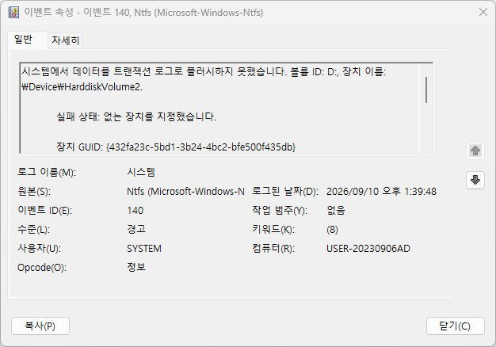

EVENT ID 140
Ntfs 140 트랜잭션 로그 flush 실패 점검
NTFS가 트랜잭션 로그에 데이터를 flush하지 못했으며 볼륨 손상이 발생할 수 있다고 기록한 이벤트입니다. 저장장치 I/O 경로와 파일 시스템 상태를 함께 확인해야 합니다.
Ntfs 140은 NTFS가 트랜잭션 로그에 데이터를 기록하지 못해 볼륨 손상 가능성을 경고한 기록입니다. 저장장치 응답 지연, 연결 끊김, 전원 차단과 함께 나타날 수 있어 같은 시각의 Disk 이벤트를 비교해야 합니다.
파일이 정상적으로 열리더라도 반복되는 140은 저장 경로의 불안정성을 보여줄 수 있습니다. 쓰기 작업을 줄이고 중요한 자료를 먼저 다른 장치에 복사한 뒤 원인을 점검하세요.
발생 조건
- 저장 중 멈춤 또는 지연
- 외장 디스크·가상 머신 스냅샷 작업 중
- Ntfs 55·50 또는 Disk 오류 동반
가능성 높은 원인
- 저장장치 응답 지연·연결 끊김
- SATA·USB·스토리지 컨트롤러 문제
- 전원 차단이나 비정상 종료
- 필터 드라이버·가상화 저장장치 문제
점검 순서
- 중요 파일을 먼저 백업하고 이벤트의 VolumeId·DeviceName 기록 — 되돌리기 쉬운 항목부터 확인해 위험 없이 범위를 줄입니다.
- Disk 7·11·51·98·129·153과 같은 시각인지 비교 — 첫 확인 결과와 비교해 원인 후보를 좁힙니다.
- SMART·케이블·포트·M.2 장착 상태 확인 — 이 단계에서도 재현되면 다음 항목으로 넘어가세요.
- 백업 후 fsutil dirty query와 제조사 진단 도구로 볼륨·장치 상태 점검 — 변경 전후로 증상이 달라지는지 비교해보세요.
- 반복되면 저장장치·컨트롤러·필터 드라이버 업데이트와 교차 테스트 — 여기까지 확인해도 해결되지 않으면 다음 원인을 검토하세요.
140만으로 파일이 이미 손상됐다고 단정하지는 않지만, 반복되면 데이터 손실 위험을 고려해 쓰기 작업을 줄이고 백업을 우선하세요.
실제 사용자 사례
위 점검 순서로도 원인이 불확실할 때, 실제 진단 사례를 참고하면 도움이 됩니다.
140의 DeviceName·ProductId 필드로 문제 드라이브를 특정한 사례
Microsoft-Windows-Ntfs 원본의 140 이벤트는 일반 탭에 "실패 상태: 없는 장치를 지정했습니다"처럼 친절한 문구가 표시되지만, 세부 정보(XML 보기)를 열면 VolumeId, DeviceName, Error뿐 아니라 ProductId(제품명)·DeviceSerialNumber(일련번호)까지 담고 있어 일반 탭 문구만으로는 알 수 없는 정보를 확인할 수 있습니다. 한 사례에서는 이 필드로 문제 장치가 SAMSUNG HD502HJ(D: 드라이브)임을 바로 특정할 수 있었습니다. 18건의 Error 값을 모아 보니 0xc000000e(STATUS_NO_SUCH_DEVICE, "없는 장치를 지정했습니다") 12건, 0xc0000185(STATUS_IO_DEVICE_ERROR, 장치 입출력 오류) 6건으로 나타나 매번 같은 코드가 아니라 장치가 응답 자체를 못 하는 여러 형태로 기록되고 있었습니다. 같은 로그에서 이 드라이브는 Disk 51이 1,930건, Ntfs 50(대상 $Mft·$Directory)이 12건 함께 반복되고 있어 컨트롤러·드라이버가 아니라 드라이브 자체의 결함으로 확인됐습니다. 전체 경위는 Disk 이벤트 51 사례에서 확인할 수 있습니다.

포인트: 140 이벤트의 세부 정보(XML 보기)를 열어 DeviceName·ProductId·DeviceSerialNumber 필드를 확인하면, 여러 저장장치를 쓰는 PC에서 어느 장치가 문제인지 바로 특정할 수 있습니다. Error 값이 "없는 장치를 지정했습니다"든 "장치 입출력 오류"든, 매번 다른 실패 상태로 반복된다면 파일 시스템보다 장치 자체를 의심하세요.
백업·교체용 저장장치
이 기록이 반복된다면 검사보다 백업이 먼저입니다. 자료를 옮겨 둘 여유 저장장치가 없다면 아래에서 확인해 보세요. 원인이 드라이브 노후로 확인되면 그대로 교체용으로 쓸 수 있습니다.
이 포스팅은 쿠팡 파트너스 활동의 일환으로, 이에 따른 일정액의 수수료를 제공받습니다.
관련 코드·가이드
자주 묻는 질문
- 140이 있으면 파일이 이미 손상된 건가요? 손상을 경고하는 기록이지만 실제 손상 여부는 파일과 볼륨 검사로 확인해야 합니다. 반복되면 백업을 먼저 진행하세요.
- 어떤 이벤트를 함께 봐야 하나요? Disk 7·11·51·98·129·153, Ntfs 55·50, storahci·stornvme 이벤트가 같은 시각에 있는지 확인하세요.
최종 검토일: 2026-09-10